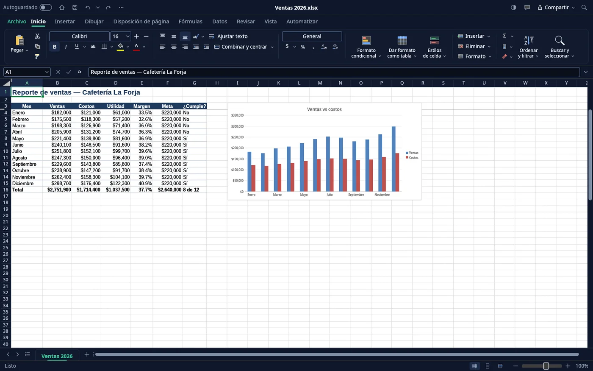
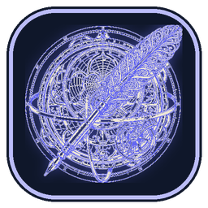
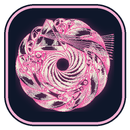
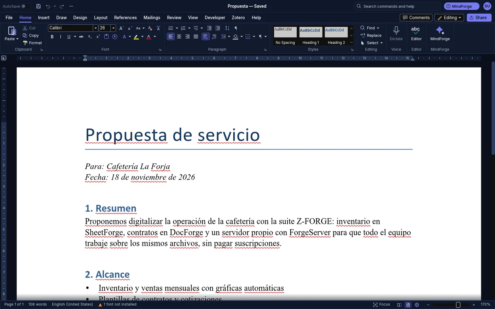
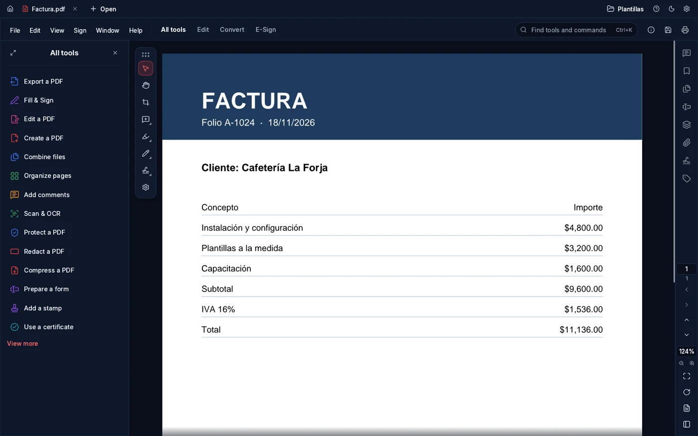
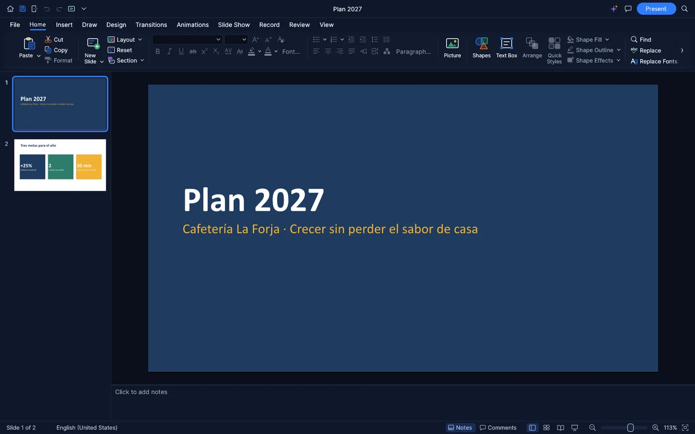
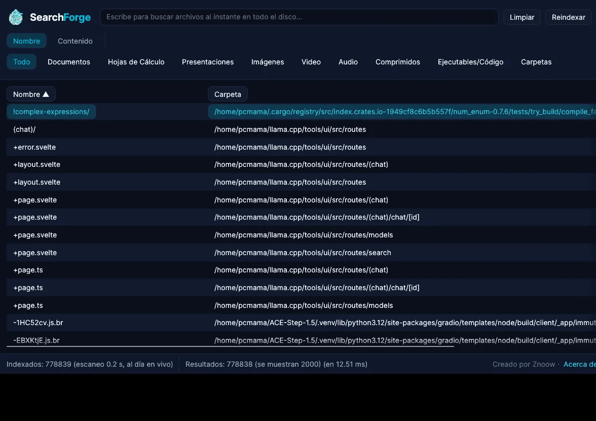

Znoow
Znoow
Z-FORGE, tu oficina nativa en Rust
Documentos, hojas de cálculo, presentaciones, PDF con OCR y correo. Rápida, sin nube obligatoria y con IA que corre en tu equipo.

Las apps
Cada una abre los formatos que ya usas: .docx .xlsx .pptx .pdf .odt .ods

DocForge
Documentos de Word sin Word, con MindForge, un asistente de IA local que corrige, resume y traduce.

SheetForge
Hojas de cálculo con fórmulas que dan lo mismo que Excel, y Macros IA que escriben y prueban tus macros.
SlideForge
Presentaciones que se ven igual que en PowerPoint, con gráficas, transiciones y vista de orador.

PDFForge
Lee, firma, rellena, une, censura y protege PDF. OCR para escaneos con ForgeOCR.

MailForge
Todas tus cuentas de correo, calendario, tareas y contactos, con resúmenes por IA local.
SearchForge
Encuentra cualquier archivo del disco al instante, también por su contenido.

ZipForge
Comprime y descomprime, y mira fotos, PDF y documentos dentro del ZIP sin extraerlos.

GalleryForge y PixelForge
Tus fotos por carpeta y un editor para ajustar, girar y ocultar datos.
ForgeLauncher
Instala y actualiza toda la suite desde un solo lugar.
Por qué Z-FORGE
Hecha para durar en tu computadora, no en la de alguien más.
Nativa y rápida
Escrita en Rust. Arranca en un instante y usa poca memoria, sin navegador escondido.
IA en tu equipo
Funciona con Ollama en tu propia máquina: tus documentos no salen a ninguna nube.
Tus formatos de siempre
Abre y guarda archivos de Office y OpenDocument tal como se ven en Word, Excel y PowerPoint.
Cómo se ve




Proyectos de código abierto
Piezas de Z-FORGE publicadas para que cualquiera las use.
In English
Z-FORGE is a native Rust office suite by Znoow: documents, spreadsheets, presentations, PDF with OCR, email and instant file search, with AI that runs on your own computer. Free downloads for Linux and Windows on GitHub.